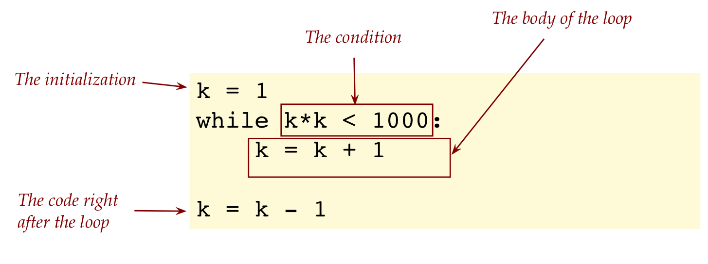
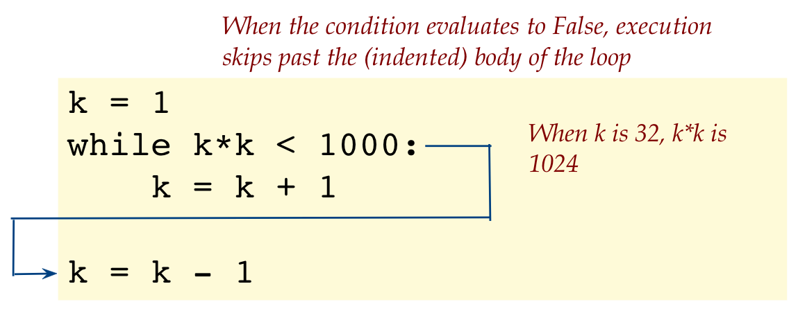
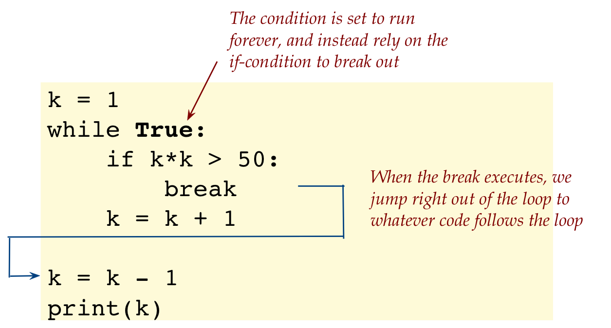
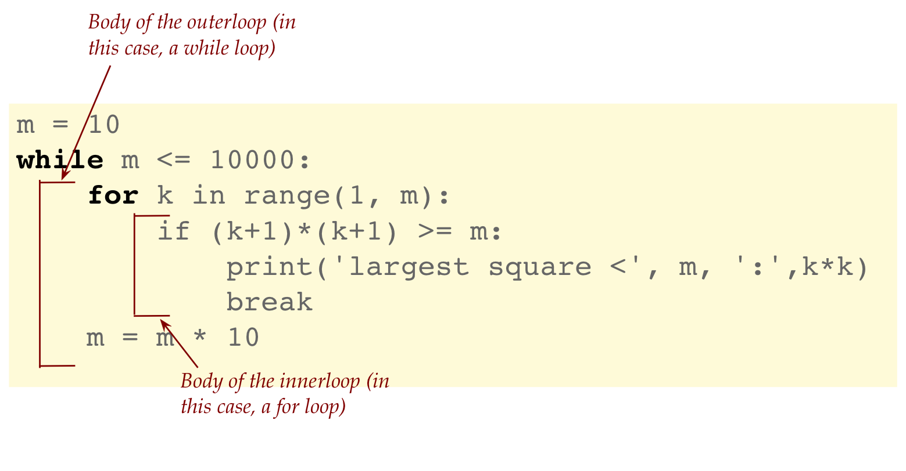
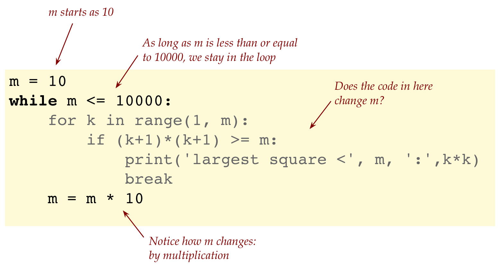
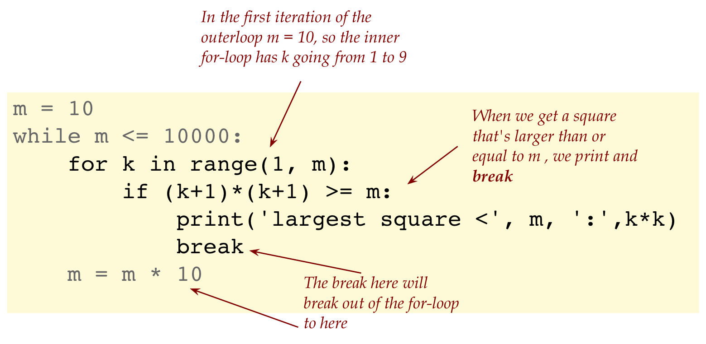
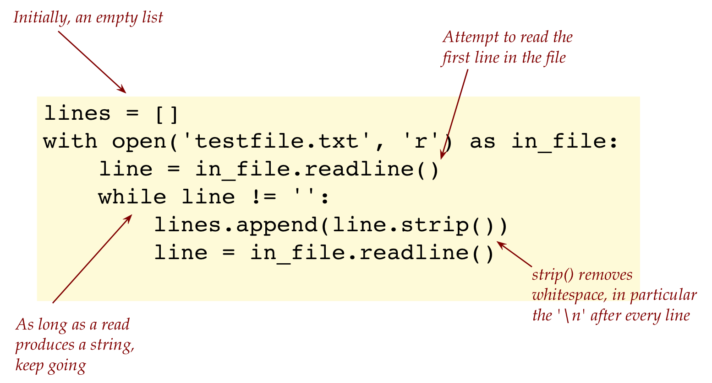

Module 4: while loops, I/O
Objectives
By the end of this module you will be able to:
- Work through examples of indefinite loops.
- Write while-loop versions of for-loops.
- Work through examples of using the
breakstatement. - Write code to read and write to text files.
4.0 while loops: An example
The numbers 1, 4, 9, 16, 25, and so on are squares, with the next one being 36 (which is 62).
Suppose our goal is to identify the largest square that’s less than 1000.
We’ll first show how this can be solved with a new kind of loop: the while-loop, and then try the same problem with a for-loop.
The program:
k = 1
while k*k < 1000:
k = k + 1
# Reduce by 1 because now k*k > 1000
k = k - 1
print('largest square < 1000:', k*k, '= square of', k)How does a while-loop work?
The essential idea is: a while-loop keeps iterating until its condition evaluates to False.
Let’s examine the structure: 
In our example, the condition was:
while k*k < 1000:Thus, as long as the value of
kis such thatk*kis less than 1000, execution enters and stays inside the loop.Notice that
kis incremented (or changed) inside the loop:while k*k < 1000: k = k + 1Thus, eventually
kwill get large enough so thatk*kwill be larger than 1000.When k is 32, in fact, 32*32 = 1024, which will cause the condition
k*k < 1000to evaluate to False.At this moment, execution exits the loop to the whatever code follows: 
Let’s now examine a simpler while-loop:
k = 1
while k < 6:
print(k)
k = k + 1Keep in mind while you examine the example discussed below:
A while-loop typically must feature some kind of initialization before the loop as shown below:
k = 1 while k < 6: print(k) k = k + 1The variable that’s involved in the condition should be changed inside the loop so that the condition eventually evaluates to
False:k = 1 while k < 6: print(k) k = k + 1Another important thing to remember: If you forget to change a variable like
kinside the loop, the condition will never becomesFalse, which means the loop will iterate forever:k = 1 while k < 6: print(k) i = k + 1 # Error!In the example discussed above
The incremented value
k+1does not get stored ink.Which means
knever gets large enough.Therefore
k<6will always be True.Thus, we get an infinite loop (that iterates forever).
It’s alright, but probably not useful, if the condition never evaluates to
Trueeven once:k = 6 while k < 6: print(k) k = k + 1The code still runs but the while-loop is not executed at all.
4.1 while loops: an example with floating point variables
Consider the following example:
x = 0.5
s = 0
while s <= 2:
s = s + x
print('s =', s)- The value of x (which is 0.5) keeps getting added to s, as long as s is less or equal to 2.
- Thus, the last value of s to keep going in the loop is when s = 2.
- At this time, we stay for one more iteration, after which s becomes 2.5.
Let’s look at a more illustrative version now:
x = 0.5
s = 0
k = 0
while s <= 2:
s = s + x
k = k + 1
print('s =', s, 'k =', k)Here, we’ve added a counter variable to track each loop iteration.
So far it’s been straightforward. Let’s now solve a problem:
Remember Zeno’s paradox?
To summarize one version, Zeno said (with a wry smile, probably):
- To walk a mile, you’d have to first walk half the remaining distance (0.5 miles).
- Then, to get to the rest, you’d have to walk at least half of the remaining (0.25).
- Then, half of the remainder (0.125)
- … and so on.
- So, the total distance would be an infinite sum: 0.5 + 0.25 + 0.125 + …
- Which is infinite [he said]
Let’s count how many successive halvings add up to, say, 0.9.
Examine the code shown below:
x = 1 s = 0 k = 0 while s < 0.9: x = x / 2 # Halve x each time s = s + x k = k +1 print(k)- We accumulate the sum in
s. - Note that we start with
x = 1because we perform the halving before adding tos. - This means the first value added into
sis0.5(as intended). - Each such addition into
sget counted ink.
- We accumulate the sum in
A few comments that go beyond the scope of the course (just for curiosity):
The infinite sum, in fact, adds up to 1.
It took centuries for mathematics to develop to a point where one can prove that infinite sums are acceptable and can have finite results.
However, a computer can only represent real numbers approximately, which means the sum is itself approximate.
You can see this by changing the while-condition from
while s < 0.9:to
while s < 1:Theoretical math would say that the while-loop would execute forever, but because there limits to what’s representable on a computer, the loop will indeed terminate.
4.2 for vs. while
Let’s contrast for-loops and while-loops by writing a for-loop as a while-loop, and vice-versa.
As an example, let’s print the numbers 0 through 10:
# for-loop version
for k in range(11):
print(k)
# while-loop version
k = 0
while k < 11:
print(k)
k = k + 1The for-loop is simpler to write.
The while-loop must make explicit three things:
The initialization:
k = 0 # --> initialization while k < 11: print(k) k = k + 1The termination condition:
k = 0 while k < 11: # --> condition print(k) k = k + 1And the variable change (that will ultimately cause the condition to become False):
k = 0 while k < 11: print(k) k = k + 1 # --> variable change
All of this is hidden in the for-loop.
Underneath the hood, it turns out, the for-loop also has these three elements.
It’s just that we don’t have to write them, Python does so behind the scenes.
When you write while-loop, ask yourself: “Do I have the three elements (initialization, condition, variable-change)?”
A really common mistake:
k = 0 while k < 11: print(k)This loop runs forever!
Next, let’s go from while to for:
Consider this while-loop that prints the letters in a string backwards:
s = 'hello' k = len(s) - 1 while k >= 0: print(s[k]) k = k - 1
The initialization starts k at the last index of the string:
k = len(s) - 1The loop condition expects k to decrement until it hits 0.
After this, k (when it’s -1) will have gone past the left end of the string.
k decrements in the loop.
The equivalent for-loop is efficient to write, but less pretty:
for k in range(len(s)-1, -1, -1): print(s[k])Here:
The range begins with
for k in range(len(s)-1, -1, -1):Ends with 0, but has the index just past (-1) as the limit:
for k in range(len(s)-1, -1, -1):And the increment is -1 (which makes it a decrement).
Later, when we learn more advanced ways of using slicing, we will be able to do the same thing with shorter code.
4.13 Video
4.3 Using break in loops
Let’s return to our first example of finding the last square that’s less than 1000.
Recall what we wrote:
k = 1
while k*k < 1000:
k = k + 1
k = k - 1
print('largest square < 1000:', k*k, '= square of', k)One can use a break statement as an alternative to writing the “loop exit” condition as the while condition.
We’ll first do this with a for-loop, and then see something unusual with the while-loop version.
To simplify tracing, let’s rephrase to “largest square less than 50”.
First, the for-loop version:
for k in range(1, 50):
# print('Before-if: k =', k)
if k*k > 50:
break
# print('After-if: k =', k)
k = k - 1
print(k)Let’s point out some salient features of the break-statement:
A
break-statement is the reserved wordbreakall by itself on a line, as seen above.When a
break-statement is executed, Python looks for the loop that encloses thebreakand abruptly, right there and then, exits the loop.The
break-statements are useful to check for conditions that should result in leaving the loop immediately.One could write code like this, but it would make no sense:
for k in range(10): print(k) breakThis would cause the first value (0) to print, and a break right out of the loop.
As a mathematical aside, we know that we don’t really need the for-loop range to be as high as
50:for k in range(1, 50): if k*k > 50: breakAfter all, as
kgets close to50, there is no way k*k would be less than50. However, we’ll leave it as is, for the sake of simplicity.There are options in writing the loop. Consider the following case:
for k in range(1, 50): if (k+1)*(k+1) > 50: print(k) breakIs this more elegant, if a bit harder to understand at first?
Next, let’s look at a while-loop version of the program:
Here’s the code:
k = 1 while True: if k*k > 50: break k = k + 1 k = k - 1 print(k)Observe: 
Was it surprising that we deliberately set up a loop to appear to run forever?
This is entirely do-able and often desirable, provided we are real careful to set up a condition inside the loop to break out eventually.
We need to be sure we hit that condition eventually.
4.4 Loops within loops
Just as we’ve seen nested for-loops, so can we have nested while-loops or one kind inside another.
Consider this example:
m = 10
while m <= 10000:
for k in range(1, m):
if (k+1)*(k+1) >= m:
print('largest square <', m, ':',k*k)
break
m = m * 10Let’s explain:
- First, notice that we have a for-loop inside a while-loop: 
- Let’s start with understanding what happens in the outer loop: 
- Thus, m is first 10, then 100, then 1000, then 10000.
- Now let’s see what happens within one iteration of the outerloop (for a particular value of m): 
The break-statement in the for-loop exits the for-loop (the enclosing loop), which means we’ll still be inside the while-loop (where m changes).
4.5 More stats via programming
Consider the following problem:
- An experiment consists of flipping three coins.
- The experiment is repeated until all three are “heads”
- On average, how many experiments are needed until all three turn up “heads”?
One way to think about this problem “statistically” is as described below:
- Suppose we hire a thousand people to each perform repeated three-coin flips.
- For very few of these people, they’ll get “heads-heads-heads” the very first experiment.
- For others, they might have to repeat 10 times before they see this.
- Each person counts how many experiments had to be tried before getting three-heads.
- The result is the average number across the thousand people: the average number of three-coin flips needed to see three heads.
Instead of calculating by hand, we will write a program to estimate this number:
import random
num_trials = 1000
total = 0
for k in range(num_trials):
got_three = False
num_three_flips = 0
while not got_three:
c1 = random.choice(['H','T'])
c2 = random.choice(['H','T'])
c3 = random.choice(['H','T'])
num_three_flips += 1
if (c1 == 'H') and (c2 == 'H') and (c3 == 'H'):
got_three = True
total += num_three_flips
estimate = total / num_trials
print('estimate', estimate)Let’s try and understand the execution of the above program:
First, let’s point out the process of estimation (the outer loop) that we’d use in any estimation problem:
num_trials = 1000 total = 0 for k in range(num_trials): # how many of these resulted in successes? estimate = total / num_trialsNow let’s look inside to see how each trial is performed:

A variable like
got_threeis sometimes called a flag variable: we use it to flag a condition that we’re looking for.
4.6 New topic: reading from a file
Very often, data is collected and stored in files, and so it’s desirable to learn how write code that plucks data right out of such files.
Let’s start with a simple test file of plain text.
- First, examine the file testfile.txt to see that it’s a file consisting of four lines of text. (From the poet Ogden Nash.)
We will look at a few different versions of reading from this file.
Here’s the first example:
with open('testfile.txt', 'r') as in_file: lines = in_file.read() print(type(lines)) print(lines)
We’ve used two Python reserved words:
with open('testfile.txt', 'r') as in_file:Although file input/output (I/O) does not strictly require the
withstructure, it is useful because:- Files that are being accessed by one program are said to be in an “opened” state.
- For another program to be able access the file, the first one has to “close” it (that is, signal that it’s done with the file).
- The
withstructure automatically takes care of it.
The function call to
opentakes the name of the file and the kind of access, for example:with open('testfile.txt', 'r') as in_file:- ‘r’ for read-only access (we’re not changing the file here)
- ‘w’ for write, if we should choose to.
The result of opening a file is to get a special kind of variable, what we’ve called
in_filein this case:with open('testfile.txt', 'r') as in_file:It is this variable that’s going to perform the reading and, in this case, get us all the text in one shot:
with open('testfile.txt', 'r') as in_file: lines = in_file.read()Note that all the lines are returned as a single string.
This means, it will be difficult to analyze string-by-string, if that’s our goal.
There is a way to take the single string and break it into separate lines, but let’s instead find a way to read separate lines.
Accordingly, let’s look at a way to read the file into a list of strings, where each line is one string in the list:
lines = []
with open('testfile.txt', 'r') as in_file:
line = in_file.readline()
while line != '':
lines.append(line.strip())
line = in_file.readline()
print(type(lines))
print(lines)- Here, we’re reading one line at a time and appending to a running list, which is the
linesvariable. - The problem is, for any general file, we won’t know in advance how many lines of text are in the file.
- A while-loop to the rescue!
- Thus, we keep reading from the file as long as a read operation produces a line: 
We will now look at how to write to a file.
Suppose we’ve read a text file into a list of strings.
Let’s now write these to a new file:
with open('testcopy.txt', 'w') as out_file: for line in lines: out_file.write(line + '\n')This time, we’re opening a file called
testcopy.txtfor the purpose of writing to it:with open('testcopy.txt', 'w') as out_file: for line in lines: out_file.write(line + '\n')We’ve named our file variable
out_file.That will let us use a function called
write():with open('testcopy.txt', 'w') as out_file: for line in lines: out_file.write(line + '\n')Here, we’re looping through the list, writing each string as one line in the file.
Notice that we need to insert the ‘’ at the end of each line.
Recall:‘
\n’ represents an instruction to both output and files to “go to the next line right now”.Thus for example
print('hello' + 'world') # Prints helloworld on one line print('hello' + '\n' + 'world') # Prints hello, and then world on the next line- So, to write strings to different lines, we have to tell the function that writes to files to go to the next line with an explicit ‘’.
- It’s similar with reading, if we read a whole file as one string, that string will contain the so-called linebreaks (the ‘’ characters).
Next, let’s read from a file of numbers and perform some basic stats:
First, examine the file data.txt and see that it’s a collection of numbers, one per line.
We’ll read line by line as a string, and then convert to a floating-point number:
data = [] with open('data.txt', 'r') as in_file: line = in_file.readline() while line != '': s = line.strip() # Remove leading/trailing whitespace x = float(s) # Convert string to float data.append(x) # Add to our list line = in_file.readline() # Get the next line print(data)
4.7 Extracting multiple data from each line
Consider a data file that looks like this, with three numbers on each line:
6.0 6.0 9.0
4 6 8
24 16 2
3 3.0 3
0.1 0.5 0.3What we’d like to do is compute the average of the numbers in each line. So, the output should be something like:
Average of 6.0 6.0 9.0 is: 7.0 Average of 4.0 6.0 8.0 is: 6.0 Average of 24.0 16.0 2.0 is: 14.0 Average of 3.0 3.0 3.0 is: 3.0 Average of 0.1 0.5 0.3 is: 0.3Therefore, what need to do is not only read a line at a time, but be able to extract multiple items from within a line.
We can split a string as follows:
Consider the following example:
s = '6.0 6.0 9.0' data = s.split() # data is a list print(data)Here, the
split()function in strings, looks for whitespace within and separates out into a list those items separated by this whitespace.So, in the above example, we’ll have the string
6.0 6.0 9.0split into a list of three strings['6.0', '6.0', '9.0']Having a list of strings is not enough to compute the average of the numbers in those strings.
We need to convert into numbers:
s = '6.0 6.0 9.0' data = s.split() # data is a list print(data) x = float(data[0]) y = float(data[1]) z = float(data[2]) # x, y, z are numbers avg = (x + y + z) / 3.0 print(avg)We can now read one line at a time from the data file, split each line, convert to numbers, and then calculate the average for each line.
We’ll now tackle one additional complication:
Download and examine the file data2.txt in a text editor.
- Identify all the (unnecessary) whitespace within.
It is common for real data to be acquired or presented with mistakes, missing entries, or weird whitespacing.
The missing entry problem is somewhat harder to tackle, so we’ll postpone that for another time.
But we can easily eliminate whitespace using
strip().For example consider:

Thus, we need to worry about when a line is all whitespace but not empty.
Let’s put these ideas into code:
with open('data2.txt','r') as in_file: line = in_file.readline() while line != None: line = line.strip() print('[', line, ']', sep='') if len(line) == 0: break data = line.split() print(data) x = float(data[0]) y = float(data[1]) z = float(data[2]) avg = (x + y + z) / 3.0 print('Average of ', x, ' ', y, ' ', z, ' is: ', avg, sep='') line = in_file.readline()
We’ll point out a few things as shown below: 
We have two print’s in there to see what we get as a result of
strip()andsplit():line = line.strip() print('[', line, ']', sep='') data = line.split() print(data)Recall: the
sep=''(empty separation) parameter tellsprint()not to add its own whitespace between different arguments.Notice also that we have deliberately added in our printing,a pair of brackets:
print('[', line, ']', sep='')- This is a common programming technique when you want to identify whitespace: put something around it that is actually visible.
You also noticed that
split()produces alist, and that each string in the list has already had whitespace removed on either side.
4.8 While-loops when files are large
Let’s return to a problem we’ve seen before i.e., identifying the longest sentence in a text file.
Take a moment to review that section
Let’s understand the following from the review:
To find the longest sentence, we read the whole file into one giant list of sentences.
Then, we went through the list, recording the longest sentence.
For a really large text file, the list could be too long to fit into memory.
Let’s use a different version that reads sentence-by-sentence:
import wordtool as wt def get_longest_sentence(filename): # Initiate the reading of the file sentences = wt.open_file_bysentence(filename) maxL = 0 # Get first sentence s = wt.next_sentence() while s != None: if len(s) > maxL: # Possibly update maxS maxL = len(s) maxS = s s = wt.next_sentence() # next one return maxS book = 'federalist_papers.txt' s = get_longest_sentence(book) print('Longest sentence in', book, 'with', len(s), 'chars:\n', s)
4.9 Random walks and art
But of course, we’re somehow going to combine while-loops with our recurring themes (algorithmic art, randomness).
This time, we will use a well-known idea from science called a random walk:
Imagine standing at the origin:

Then, we choose a random direction from among: North, South, East, West.
Once such a direction is randomly chosen and we take a fixed-size step in that direction, and mark the spot:

Here’s what it might look like after 5 steps:

Here’s the program:
import random from drawtool import DrawTool dt = DrawTool() dt.set_XY_range(-5,5, -5,5) dt.set_aspect('equal') step = 1 def do_walk(max_steps): x = 0 y = 0 num_steps = 0 dt.draw_point(x, y) while num_steps < max_steps: direction = random.choice(['N','S','W','E']) if direction == 'N': y += step elif direction == 'S': y -= step elif direction == 'E': x += step else: x -= step dt.draw_point(x, y) print(direction, x, y) num_steps += 1 do_walk(5) dt.display()
- The submission requires only the program
my_randomwalk.pythat when executed will generate the expected graphs as described in the problem. - You are not required submit any graphs generated by the program.
Instead of running the random walk for a fixed number of steps, we’ll now run the random walk until it “hits” one of the sides and stop.
To do this, we’ll use the approach of:
while True: # get a random direction and move # if we hit one of the sides, then breakWe’ll also enlarge the box to be bigger and make the step size smaller (so as to fill the space with dots).
- The submission requires only the program
random_walk_demo2.pywith modifications outlined herein. - When executed the code will generate the expected graphs as described in the problem.
- You are not required submit any graphs generated by the program.
We’re now finally ready for the art project:
- We’ll start different random walks at randomly selected starting points, and then draw each in a random color.
About random walks (in science):
- Although a random walk might seem like a silly exercise, the idea has had significant scientific impact.
- For example, a version of random walk is the basis for modeling diffusion and osmosis.
- The same basic idea underlies Brownian motion and Einstein’s demonstration of the existence of molecules.
- A random walk on networks (as opposed to 2D space) is what launched Google.
- Evolution is often modeled as a random walk on an abstract representation of the space of DNA sequences.
- Is that enough to believe in the importance of random walks?
4.10 When things go wrong
In each of the exercises below, first try to identify the error just by reading. Then type up the program to confirm, and after that, fix the error.